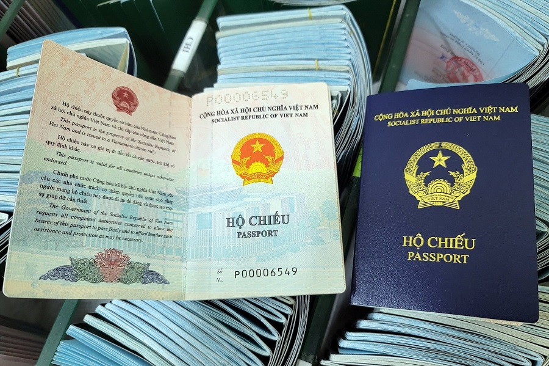

|  | ||
Vé điện tử là gì? |
||
|
“Vé hành khách”: là chứng từ vận chuyển hành khách và hành lý bằng đường hàng không và là bằng chứng của việc giao kết hợp đồng, các điều kiện của hợp đồng. Vé hành khách được thể hiện dưới hai hình thức là Vé giấy (còn thể hiện dưới tên Vé hành khách và hành lý) và Vé điện tử. “Vé điện tử”: là vé hành khách được thể hiện dưới dạng dữ liệu điện tử, bao gồm các thông tin liên quan đến việc sử dụng dịch vụ vận chuyển của Vietnam Airlines (HKVN) thay thế cho việc xuất Vé giấy. Vé điện tử có đầy đủ các thông tin như trên Vé giấy của HKVN và HKVN có trách nhiệm lưu trữ Vé điện tử và đảm bảo quá trình đi lại của hành khách được thuận tiện. “Hợp đồng vận chuyển hành khách, hành lý”: là bộ tài liệu bao gồm Vé điện tử, Điều lệ vận chuyển của HKVN, bảng giá cước vận chuyển và các thoả thuận khác bằng văn bản giữa hai bên. |
||
Tiện lợi của vé điện tử |
An toàn hơn cho quý khách vì tránh được rủi ro mất, rách, nát. |
|
| Trở về | ||